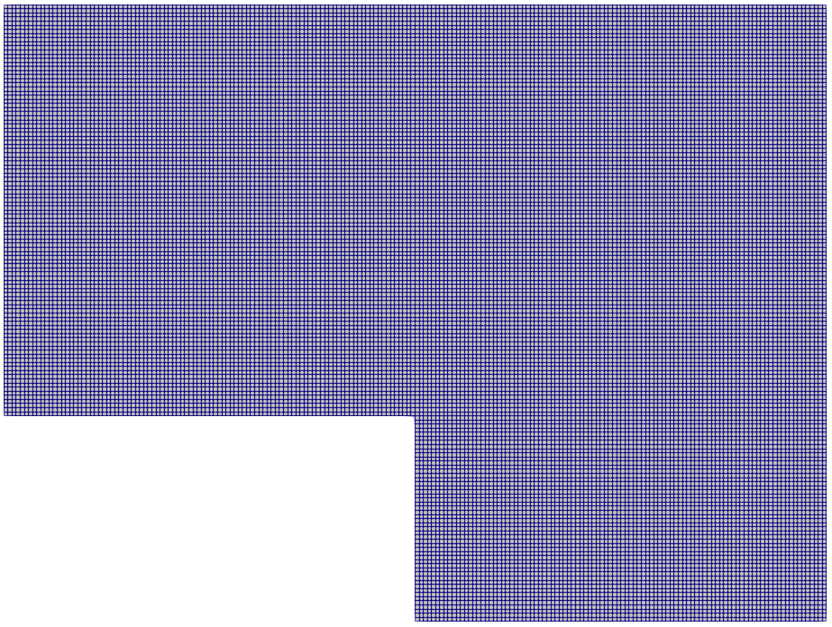

Introduction to tutorial 9
In this tutorial we implement a test where we use the Discrete Empirical Interpolation Method for a case where we have a non-linear dependency with respect to the input parameters.
The following image illustrates the computational domain which is the same as the previous example

The physical problem is given by a heat transfer problem which is described by the Poisson equation:
\[ \nabla \cdot (\nu \nabla T) = S \]
The parametric diffusivity is described by a parametric Gaussian function:
\[ \nu(\mathbf{x},\mathbf{\mu}) = e^{-2(x-\mu_x-1)^2 - 2(y-\mu_y-0.5)^2}, \]
The problem is then discretized as:
\[ A(\mu)T = b \]
In this case, even if the problem is linear, due to non-linearity with respect to the input parameter of the conductivity constant it is not possible to have an affine decomposition of the discretized differential operator.
We seek therefore an approximate affine expansion of the differential operator of this type:
\[ A(\mu) = \sum_{i = 1}^{N_D} \theta_i(\mu) A_i \]
using the Discrete Empirical Interpolation Method
The plain program
Here there's the plain code
#include "fvCFD.H"
#include "IOmanip.H"
#include "fvOptions.H"
#include "simpleControl.H"
#include <chrono>
#include "fvMeshSubset.H"
#include <chrono>
#include <Eigen/SVD>
#include <Eigen/SparseLU>
{
public:
{
volScalarField
yPos =
T.mesh().C().component(vector::Y);
volScalarField
xPos =
T.mesh().C().component(vector::X);
for (
auto i = 0;
i <
nu.size();
i++)
{
nu[
i] = std::exp( - 2 * std::pow(
xPos[
i] - mu(0) - 1,
2) - 2 * std::pow(
yPos[
i] - mu(1) - 0.5, 2)) + 1;
}
nu.correctBoundaryConditions();
(
"correct",
dimensionSet(0, 1, 0, 0, 0, 0, 0),
scalar(3.0)
);
fvScalarMatrix TiEqn22
(
fvm::laplacian(
nu,
T,
"Gauss linear")
);
return TiEqn22;
}
{
{
Eigen::SparseMatrix<double> Mr;
Eigen::VectorXd br;
theta(
i) = Mr.coeffRef(ind_row, ind_col);
}
}
{
{
Eigen::SparseMatrix<double> Mr;
Eigen::VectorXd br;
}
}
};
{
public:
:
{
(
IOobject
(
"ITHACAdict",
"./system",
IOobject::MUST_READ,
IOobject::NO_WRITE
)
);
}
PtrList<fvScalarMatrix>
Mlist;
{
{
}
else
{
for (
int i = 0;
i < par.rows();
i++)
{
Teqn.solve();
}
}
};
{
auto t1 = std::chrono::high_resolution_clock::now();
auto t2 = std::chrono::high_resolution_clock::now();
auto time_span = std::chrono::duration_cast<std::chrono::duration<double>>
(t2 - t1);
for (
int i = 0;
i < par.rows();
i++)
{
t1 = std::chrono::high_resolution_clock::now();
Teqn.solve();
t2 = std::chrono::high_resolution_clock::now();
time_span = std::chrono::duration_cast<std::chrono::duration<double>>(t2 - t1);
}
};
{
}
{
fvMesh&
mesh =
const_cast<fvMesh&
>(
T.mesh());
{
}
{
}
};
{
auto t1 = std::chrono::high_resolution_clock::now();
auto t2 = std::chrono::high_resolution_clock::now();
auto time_span = std::chrono::duration_cast<std::chrono::duration<double>>
(t2 - t1);
for (
int i = 0;
i < par_new.rows();
i++)
{
t1 = std::chrono::high_resolution_clock::now();
Eigen::VectorXd x = A.ldlt().solve(B);
t2 = std::chrono::high_resolution_clock::now();
time_span = std::chrono::duration_cast<std::chrono::duration<double>>(t2 - t1);
volScalarField Tred(
"Tred",
T);
}
}
};
int main(
int argc,
char* argv[])
{
example.OfflineSolve(example.mu, "Offline");
example.PODDEIM();
example.OnlineSolve(par_new1, "Online_red");
example_new.OnlineSolveFull(par_new1, "Online_full");
std::cout << std::endl << "The FOM Solve took: " << example_new.time_full <<
" seconds." << std::endl;
std::cout << std::endl << "The ROM Solve took: " << example.time_rom <<
" seconds." << std::endl;
std::cout << std::endl << "The Speed-up is: " << example_new.time_full /
example.time_rom << std::endl << std::endl;
example.Tonline);
std::cout << "The mean L2 error is: " << error.mean() << std::endl;
exit(0);
}
 1.8.15
1.8.15